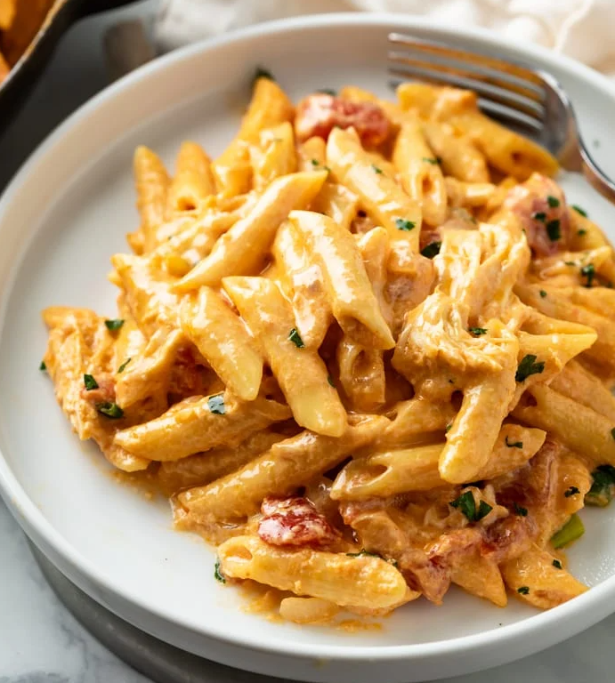

Buffalo Chicken Pasta
Home

This One Pot Buffalo Chicken Pasta Recipe is easy to make in a skillet with a
delicious cream sauce and your choice of pasta. Use fresh, rotisserie, or leftover chicken!
Ingredients
- 1 large boneless skinless chicken breast, equal to 1 lb
- 1/2 cup ranch dressing, can sub blue cheese
- 2 tablespoons butter, divided
- 1/2 cup yellow onion, diced
- 1 stick celery, diced
- 3 cloves garlic, minced
- 14.5 oz diced tomatoes, undrained (1 can)
- 4 cups chicken broth
- 1 lb penne
- 1/2 cup buffalo sauce
- 8 oz cream cheese, softened and cubed
- 1.5 cups cheddar, shredded
- 1 cup mozarella
- 1 pinch red pepper flakes, optional
- 2 tablespoons cold butter, optional
Directions
- Place chicken in a pot of water and bring to a gentle boil. (A gentle boil
ensures that the chicken doesn’t become tough.) Cook for 15 minutes, until cooked through.
Remove and use two forks to shred. Toss with ranch dressing and set aside.
- Melt butter in a large high-walled skillet over medium heat. Add the
onions and celery. Cook for 5 minutes, until softened.
Add the garlic and cook for 1 more minute.
- Add the undrained diced tomatoes and chicken broth. Bring to
a boil and add the pasta. Submerge the pasta into the liquid and let it come
back up to a boil.
- Cover and let it boil for 10-13 minutes, or until al dente. Don't cook any more than al dente
as we will be keeping it over low heat until the sauce is thickened. Lift the lid and run a
silicone spatula underneath the pasta a few times throughout cooking to ensure it doesn't stick.
Test a pasta noodle for doneness before proceeding.
- Reduce heat to low. Add the buffalo sauce, cubed cream cheese, and shredded cheese.
Use a silicone spatula to gently stir. The sauce will seem thin at first, but it continues to
thicken as it stands, and will thicken further at the next step.
- Add the shredded chicken and red pepper flakes.
- Optional: Once sauce is near your desired consistency, swirl in 2 tablespoons
cold butter. This is a technique that chefs use called “Monter au Beurre”, which
creates a smooth finish when added to warm sauces.
Notes
- Use slightly less than a pound of pasta if you like extra sauce. It will take a little longer to
thicken up but this is preferable if you plan on having leftovers, as the pasta will absorb more
sauce in the fridge.
- Make sure the cream cheese is fully softened when you add it to the pasta to ensure it melts well.
- Boil the chicken gently to ensure it doesn't become tough.
- Shred the cheese from a block for extra creamy results. Bagged shredded cheese doesn't melt (or
taste) as good.
- Add the cheese to the sauce over low heat. If the heat is too high, the dairy will separate and
the consistency will become grainy.
- Blue cheese can be used instead of ranch if preferred
Home